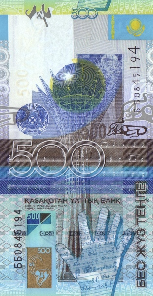
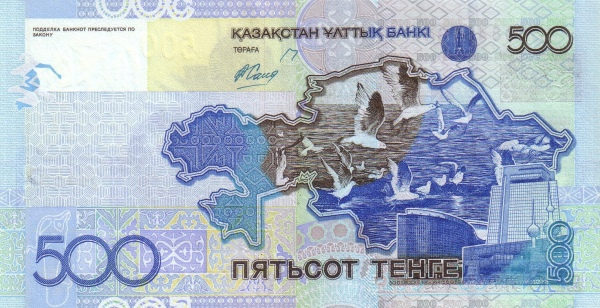
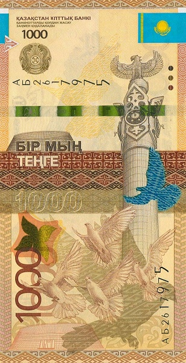
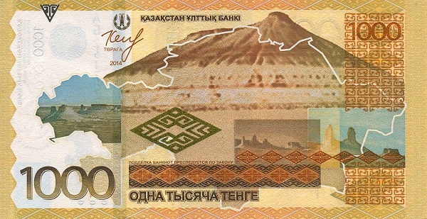
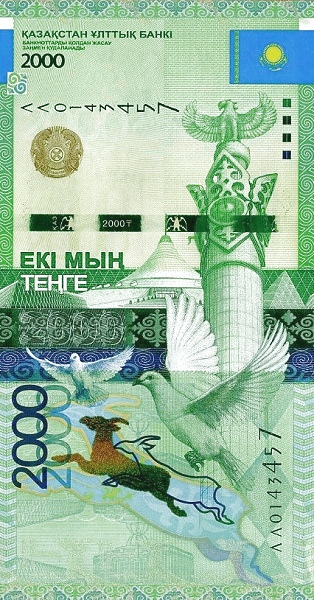
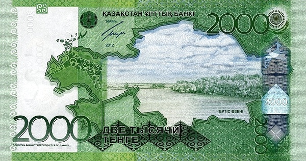
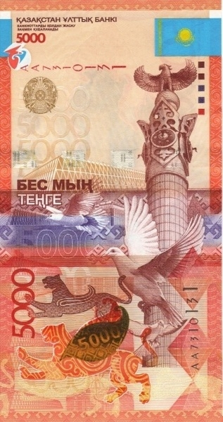
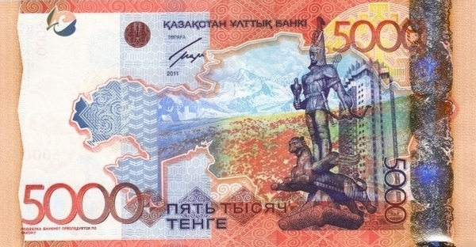
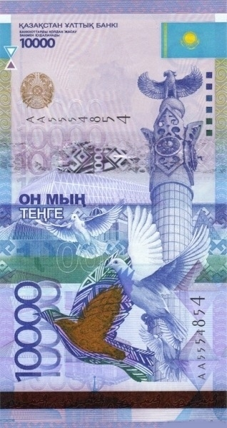
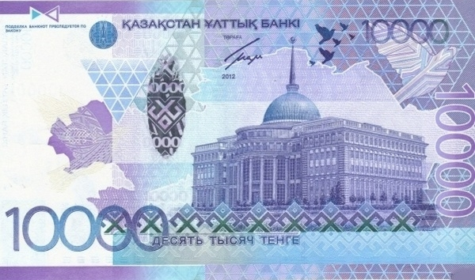

Казахстан - Казахстанский тенге
500 тенге
 Лицевая сторона - монумент «Қазақ Елi»; летящие голуби; государственный герб и флаг Казахстана; здания
Обратная сторона - контур карты Казахстана с изображением чаек на фоне Каспийского моря
1000 тенге
 Лицевая сторона - монумент «Қазақ Елi»; летящие голуби; государственный герб и флаг Казахстана
Обратная сторона - контур карты Казахстана с изображением плато Устюрт
2000 тенге
 Лицевая сторона - монумент «Қазақ Елi»; летящие голуби и изображение сайгака; государственный герб и флаг Казахстана
Обратная сторона - контур карты Казахстана с изображением реки Иртыш
5000 тенге
 Лицевая сторона - монумент «Қазақ Елi»; летящие голуби и изображение ирбисов; государственный герб и флаг Казахстана
Обратная сторона - монумент независимости и гостиница «Казахстан» в Алма-Ате; контур карты Казахстана с изображением гор Заилийского Алатау
10000 тенге
 Лицевая сторона - монумент «Қазақ Елi»; летящие голуби; государственный герб и флаг Казахстана
Обратная сторона - резиденция Президента Казахстана «Ак Орда» в Астане; контур карты Казахстана